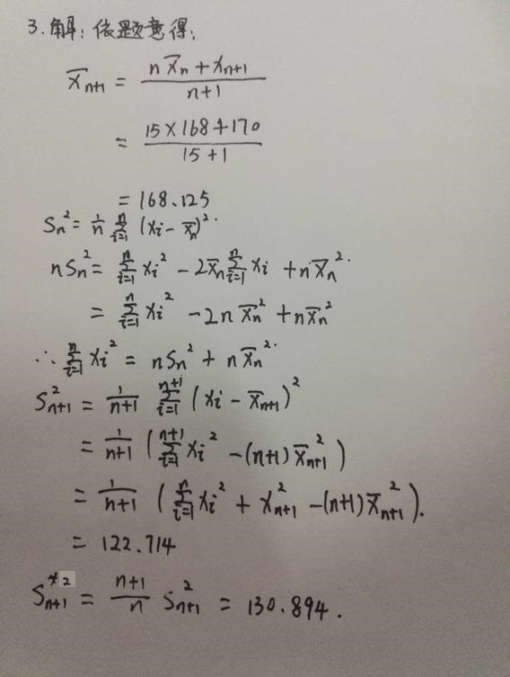
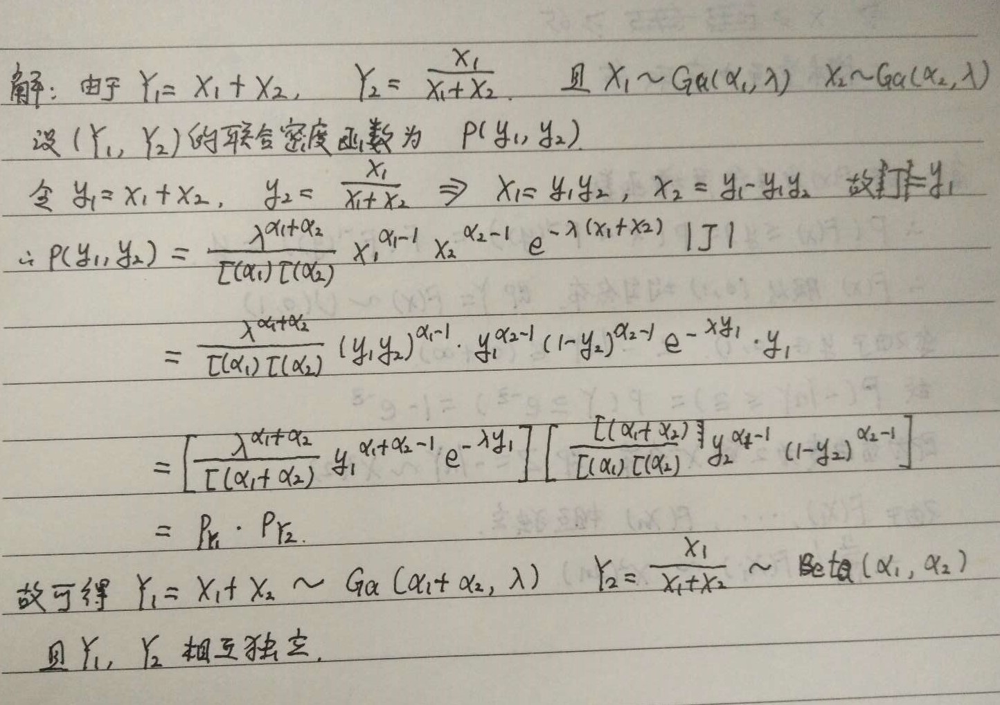
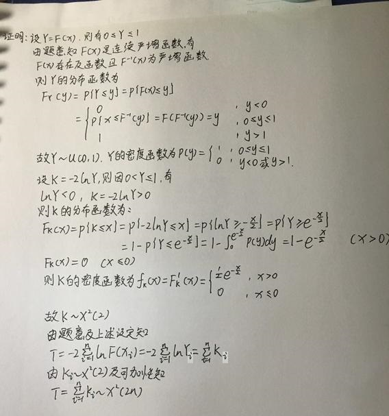
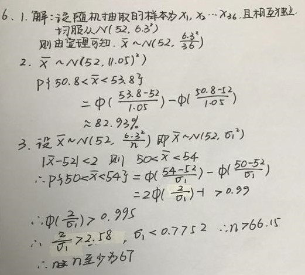

（1）韦布尔分布(Weibull distribution)族 \[p(x)=\frac k\lambda\left(\frac{x}{\lambda}\right)^{k-1}e^{-(x/\lambda)^k}1\{x\ge 0\},k>0,\lambda>0\] 是不是指数型分布族？答案：B
A. 是
B. 不是
注意：这里的未知参数有两个，分别是\(k,\lambda\)
（2）从均值为\(\mu\), 方差为\(\sigma^2\)的总体中随机抽取样本量为\(n\)的样本\(x_1,\dots,x_n\), 其中\(\mu,\sigma^2\)均未知，指出下列样本函数中哪些为统计量（ ）。 答案：CD
A. \(T_1=x_1+x_2-2\mu\)
B. \(T_2=(x_1-\mu)/\sigma\)
C. \(T_3=(\bar x-10)/5\)
D. \(T_4=\frac 1 n\sum_{i=1}^n(x_i-S_n)^2\)
（3）设\(\bar x_n,s_n^2\)表示样本\(x_1,\dots,x_n\)的样本均值与样本方差。已知\[n=15,\bar x_{n}=168, s_n=11.43, x_{n+1}=170.\] 求\(\bar x_{n+1},s_{n+1}^2\)，以及修正样本方差\(s_{n+1}^{*2}\).

注意：有同学把已知条件\(s_n=11.43\)看成\(s_n^2=11.43\)
（4）设\(X_1\sim Ga(\alpha_1,\lambda)\), \(X_2\sim Ga(\alpha_2,\lambda)\), 且\(X_1\)与\(X_2\)独立。证明
- \(Y_1=X_1+X_2\sim Ga(\alpha_1+\alpha_2,\lambda)\)
- \(Y_2=X_1/(X_1+X_2)\sim Beta(\alpha_1,\alpha_2)\)
- \(Y_1\)与\(Y_2\)独立

注意：大部分同学每一问都分别给出证明；实际上只需在求第三问时算出他们的联合密度函数即可，容易观察出联合密度函数是“可分离”的。
（5）设\(X_1,\dots,X_n\)是来自某连续总体的一个样本，总体的分布函数\(F(x)\)是连续严增函数，证明：统计量\(T=-2\sum_{i=1}^n \ln F(X_i)\sim \chi^2(2n)\).

（6）从正态总体\(N(52,6.3^2)\)中随机抽取容量为36的样本。
- 求样本均值\(\bar X\)的分布；
- 求\(\bar X\)落在区间\((50.8,53.8)\)内的概率；
- 若要以\(99\%\)的概率保证\(|\bar X-52|<2\), 试问样本量至少应取多少？
